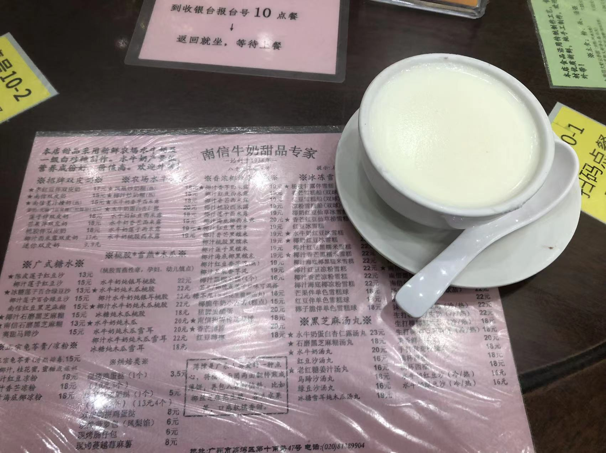
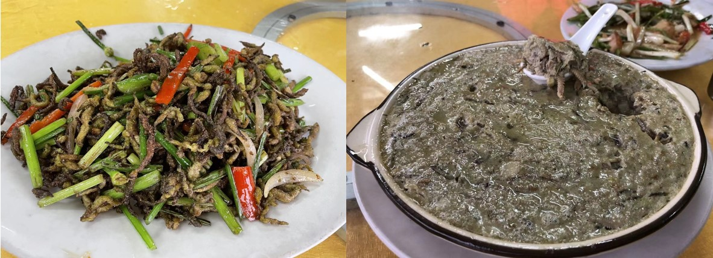
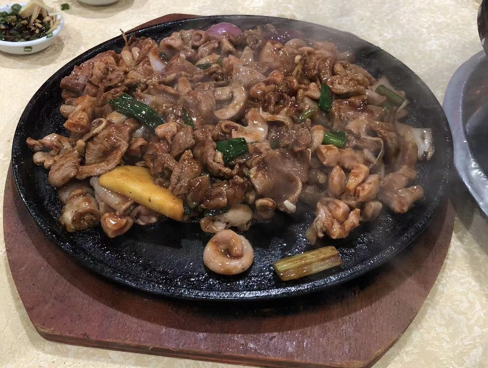
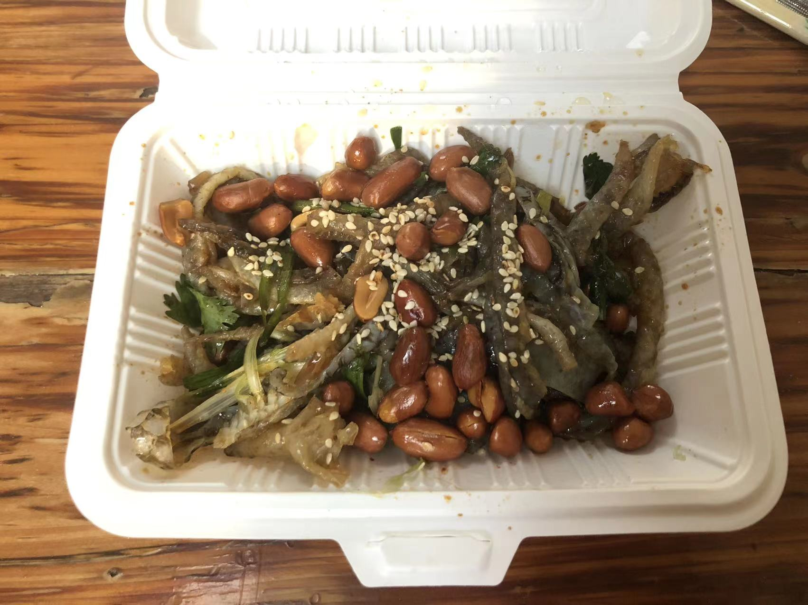
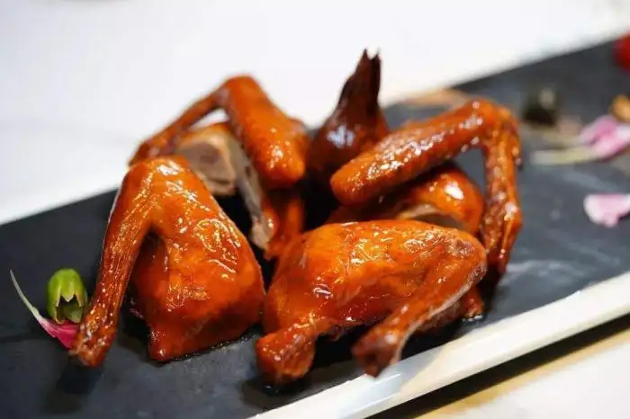
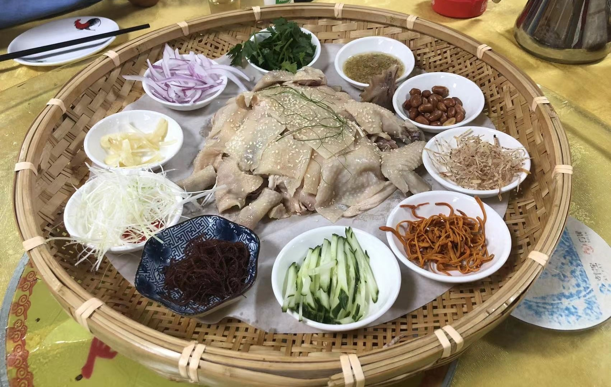

Cantonese Food Review (Part 1)
I grew up eating Cantonese food, and it's honestly the cuisine I'm most nostalgic about. Cantonese cuisine comes from the Guangdong province of China and is one of the Eight Culinary Traditions of Chinese cuisine. It has a long history and is known for its variety of ingredients, cooking methods, and flavors. In this blog post, I want to share some of my all-time favorite Cantonese dishes.
Double-Skin Milk (双皮奶)
Double-skin milk is a Cantonese dessert made with milk, egg whites, and sugar. It is called "double-skin" because it has two layers of milk skin. The first layer is formed when the milk is heated, and the second layer is formed when the milk is cooled. The dessert is very smooth and creamy, and it has a very delicate flavor. It is usually served cold, and it is a perfect dessert for hot summer days.

Grain Worm (谷虫)
Grain worm is a Cantonese dessert made with glutinous rice flour, sugar, and water. It is called "grain worm" because it looks like a worm. The dessert is very chewy and sweet, and it is usually served with coconut milk. It is a very popular dessert in Guangzhou, and it is often served in dim sum restaurants.

Pork Offal (猪杂)
Pork offal is a Cantonese dish made with pork intestines, pork liver, pork heart, pork lungs, and pork stomach. It is usually served with a spicy sauce, and it is a very popular dish in Guangzhou. The dish is very flavorful and has a very unique texture. It is often served in street food stalls, and it is a perfect dish for cold winter days.

Fish Skin (鱼皮)
Fish skin is a Cantonese dish made with fish skin, soy sauce, sugar, and spices. It is usually served as an appetizer, and it is a very popular dish in Guangzhou. The dish is very crispy and flavorful, and it is often served with beer. It is a perfect dish for parties and gatherings.

Pigeon (乳鸽)
Pigeon is a Cantonese dish made with young pigeon, soy sauce, sugar, and spices. It is usually served as a main dish, and it is a very popular dish in Guangzhou. The dish is very tender and flavorful, and it is often served in high-end restaurants. It is a perfect dish for special occasions and celebrations.

Chicken (白切鸡)
White cut chicken is a Cantonese dish made with whole chicken, ginger, green onion, and salt. It is usually served as a main dish, and it is a very popular dish in Guangzhou. The dish is very tender and juicy, and it is often served with a dipping sauce made with ginger, green onion, and oil. It is a perfect dish for family dinners and gatherings.

These are just a few of my favorite Cantonese dishes. Cantonese cuisine is very diverse and has a lot of different flavors and textures. If you have a chance to visit Guangzhou, I highly recommend trying these dishes. They are all very delicious and unique.